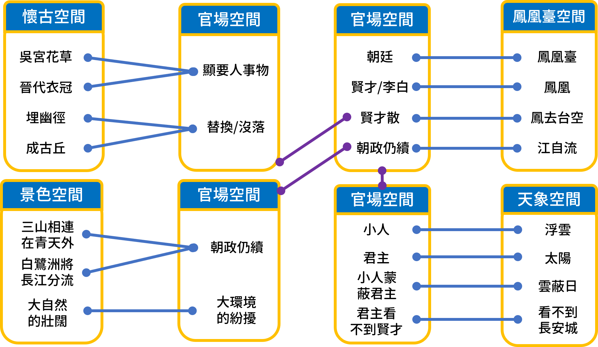

心理空間
從心理空間理論分析《登金陵鳳凰臺》及其在華語教學上的應用
本文透過心理空間的理論分析唐代詩人李白的
《登金陵鳳凰臺》
， 希望藉由客觀且具體的方式呈現詩人所使用的心理空間及其所要影射的事物。
李白《登金陵鳳凰臺》
鳳凰臺上鳳凰遊，鳳去臺空江自流。
吳宮花草埋幽徑，晉代衣冠成古丘。
三山半落青天外，二水中分白鷺洲。
總為浮雲能蔽日，長安不見使人愁。

R08142001 王凱弘 語言所碩一
阿凱中文